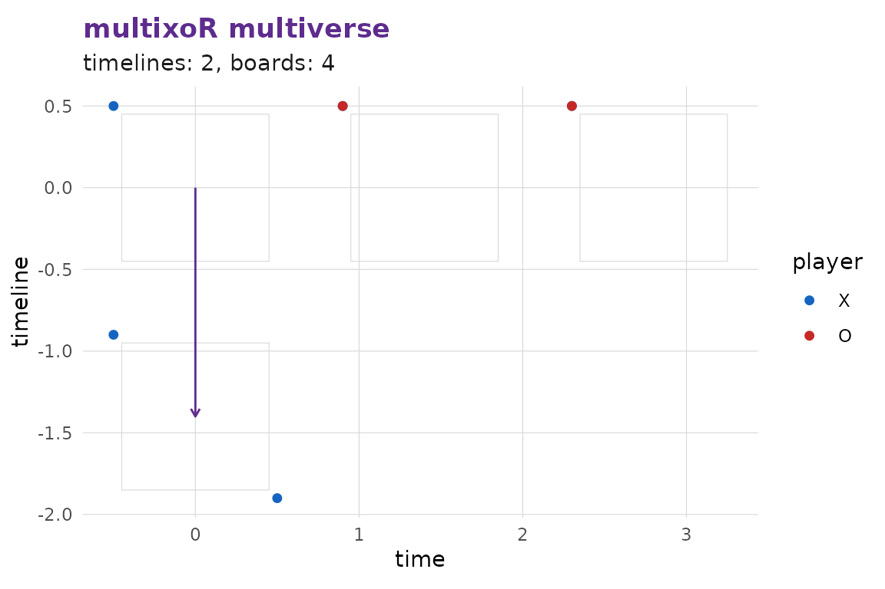
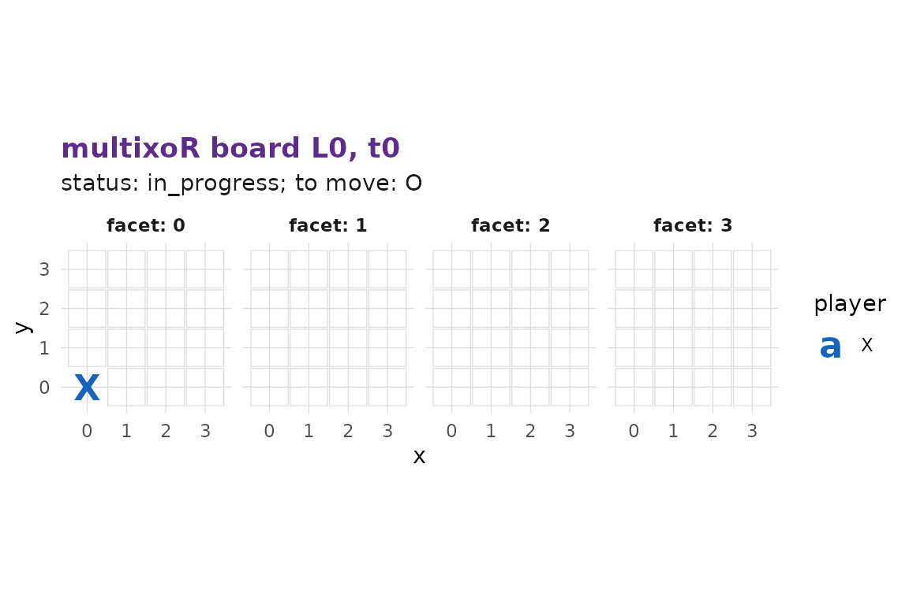
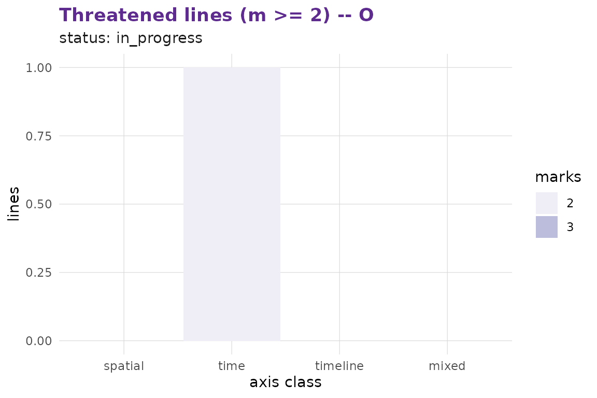

multixoR is a five-dimensional, multiverse variant of
tic-tac-toe. Two players place marks on a 4×4×4 spatial cube; play also
extends across a time axis (successive board states)
and a timeline axis (parallel, branching universes). A
player wins by making a length-3 line of their own colour along any axis
or diagonal — including lines that traverse time or timelines.
library(multixoR)
g <- mxo_new_game()
mxo_to_move(g)
#> [1] 1
nrow(mxo_legal_moves(g))
#> [1] 64Two kinds of move
A present move places the player’s mark on an empty cell of the current present board and advances time by one step.
g <- mxo_move(g, "present", L_src = 0L, t_src = 0L, idx = 0L) # X at (0,0,0)
g <- mxo_move(g, "present", L_src = 0L, t_src = 1L, idx = 16L) # O somewhere
mxo_history(g)
#> # A tibble: 2 × 8
#> ply player kind L_src t_src idx L_new t_new
#> <int> <int> <chr> <int> <int> <int> <int> <int>
#> 1 1 1 present 0 0 0 NA 0
#> 2 2 2 present 0 1 16 NA 1A branch move places into an empty cell of a past board and spawns a new timeline that copies the source board plus the new mark. The source timeline is left untouched.
g <- mxo_move(g, "branch", L_src = 0L, t_src = 0L, idx = 63L)
mxo_timelines(g)
#> # A tibble: 2 × 4
#> L parent branch_t present_t
#> <int> <int> <int> <int>
#> 1 0 NA NA 2
#> 2 1 0 0 0Analysis
Every analysis function in the package consumes the engine’s state object directly — there is no parallel implementation.
mxo_evaluate(g)
#> [1] -80
mxo_win_prob(g, method = "heuristic")
#> [1] 0.542697mxo_rate_moves() returns the type-stable per-move table
the visualisation stack and the Shiny app consume; for the 4³ default it
can be slow under the pure-R engine, so this vignette demonstrates it on
a 3³ position.
small <- mxo_new_game(n = 3L, k = 3L)
small <- mxo_move(small, "present", 0L, 0L, 0L)
head(mxo_rate_moves(small, method = "heuristic"), 6L)
#> # A tibble: 6 × 9
#> kind L_src t_src idx player score win_prob rank label
#> <chr> <int> <int> <int> <int> <dbl> <dbl> <int> <chr>
#> 1 present 0 1 1 2 -78 0.543 41 best
#> 2 present 0 1 2 2 -70 0.543 28 best
#> 3 present 0 1 3 2 -78 0.543 41 best
#> 4 present 0 1 4 2 -72 0.543 35 best
#> 5 present 0 1 5 2 -78 0.543 41 best
#> 6 present 0 1 6 2 -70 0.543 28 bestVisualisation
autoplot() is the ergonomic dispatcher; the more
specific renderers are also exported.

autoplot(g, type = "board", L = 0L, t = 0L)
autoplot(g, type = "threats")
App
mxo_run_app() launches a bundled Shiny app for
interactive play and analysis. Requires the optional packages
shiny, bslib, and DT (in
Suggests).